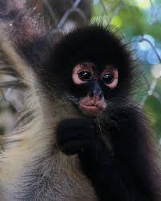
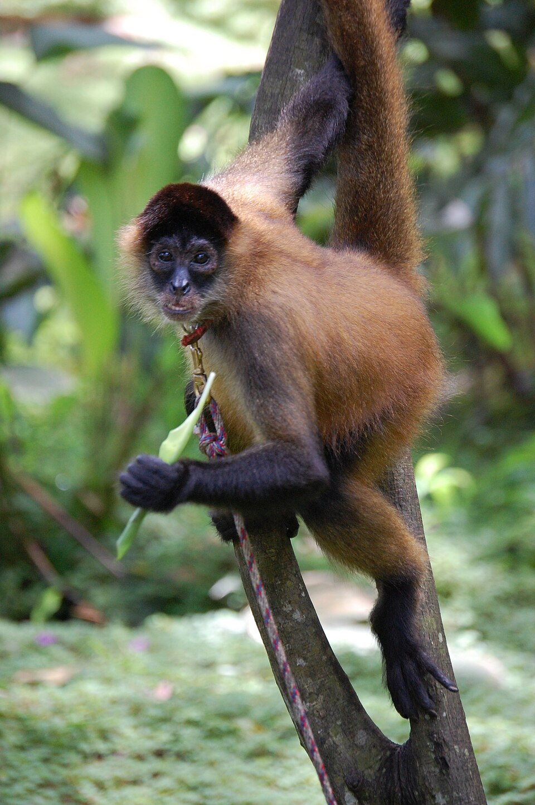
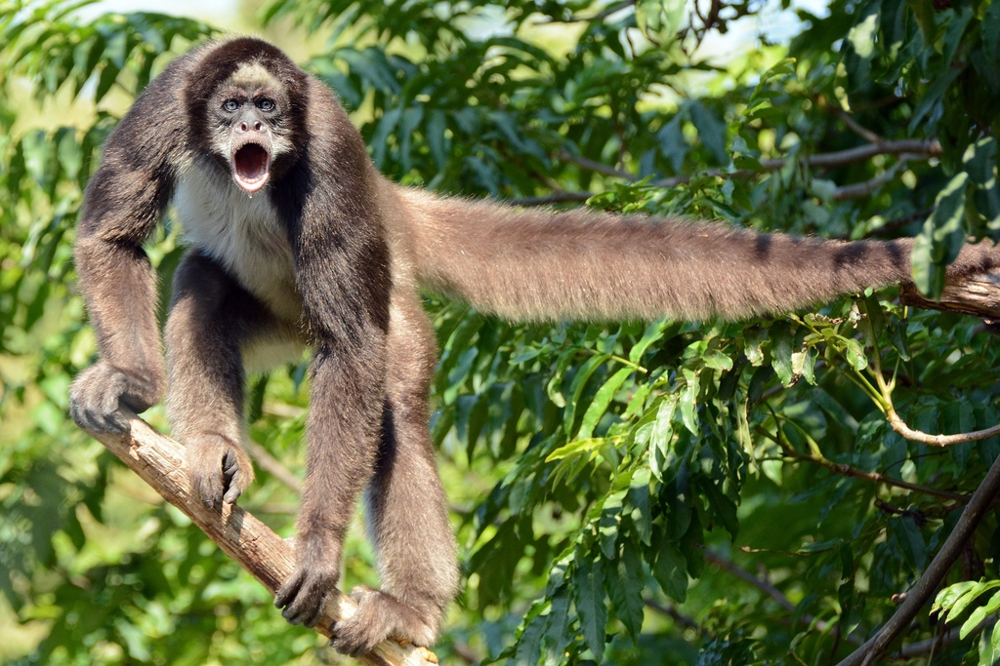

El **Mono Araña** (*Ateles* spp.) es un primate del Nuevo Mundo conocido por su **larga y fuerte cola prensil**, la cual utiliza como una "quinta extremidad" para columpiarse y agarrarse a las ramas. Su cuerpo delgado y sus largos miembros le dan una apariencia arácnida, de ahí su nombre. Se encuentran en los bosques tropicales de Centroamérica y Sudamérica. Son primates muy sociales y se alimentan principalmente de frutas maduras. Todas las especies de monos araña están clasificadas como **Vulnerables, en Peligro o en Peligro Crítico de extinción**. Su mayor amenaza es la destrucción y fragmentación de su hábitat forestal, ya que requieren grandes extensiones de selva para sobrevivir. También son cazados para el comercio ilegal de mascotas.


